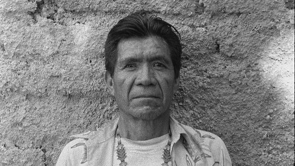

La sombra de un Dios

Bernhard Hetzenauer
|
MX/AT/DE 2017 K+S: Bernhard Hetzenauer – T: Marco A. Lujan Aarón O. Soria, Alan R. Cervantes – P: Hetzenauer & Mijatovic Filmatelier 5 – V: sixpackfilm – Mit Asunción Carrillo Gonzalez, Maria Anita Conchas Medina
|
saturday 13 okt 16.30 werkstattkino
Höchst wirkungsvoll inszeniert Hetzenauer die Geschichte von Chon, einem einheimischen Wirrárika. In ruhig komponiertem Schwarzweiß erzählt dieser die Geschichte seines Cousins, Sohn des Marakame-Schamanen in der Gemeinde La Mora in den Nayarit -Bergen. Dieser hatte sich selbst zum Gott und spirituellen Führer erklärt und benachbarte Dörfer terrorisiert.
Bernhard Hetzenauer geb. 1981 in Innsbruck. Filmemacher, Autor und Medienkünstler. Studium an der Universität für angewandte Kunst Wien, an der HFBK Hamburg, sowie an der Universidad del Cine Buenos Aires. Als Regisseur und Kameramann verwirklichte er mehrere Kurz- und Dokumentarfilme, die großteils in Lateinamerika entstanden. Hetzenauer lebt und arbeitet in Österreich, Deutschland und Lateinamerika. |
| Films Todos nos hacemos illusions 2007 – Wann habe ich aufgehört, dir meine Träume zu erzählen 2007 – Die Briefe 2012 – Faces of Athens 2017 – La sombra de un dios 2017 |